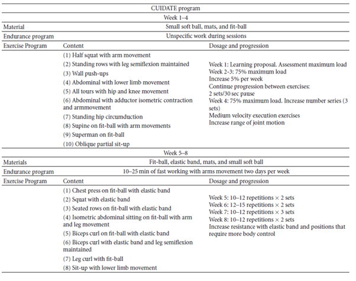

FITT is acronym that stands for Frequency, Intensity, Time, and Type. All exercise programs should be designed with F.I.T.T principles during and after breast cancer. FITT Guidelines Exercise compliance post cancer is very low [39], numerous factors for this such as lack of availability of services, travel issues, cost and personal reasons and fatigue are often reasons for this. Physiotherapist should be aware of the barriers to exercise compliance in this specific population
Below is a 8-week multimodal physiotherapy program (aerobic exercises, core stability exercises, and some recovery with stretching and myofascial release techniques). **Please do all of these exercises in moderation and with the advice of a registered physiotherapist!
